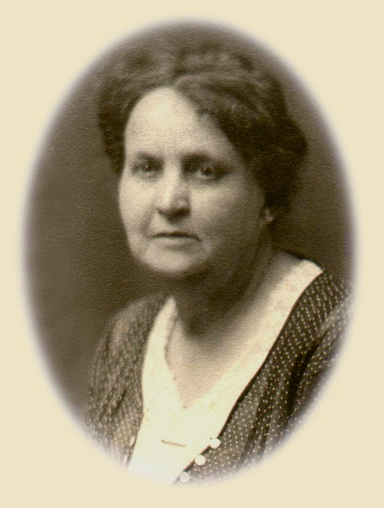
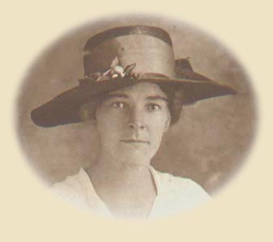
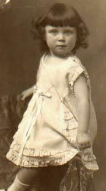
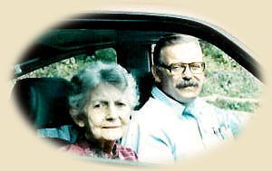

|
Eubank
A Eubank
Genealogy
in17thCentury
Virginia
A Reference History
Henry Eubank - Accomack
Henry Eubanke -Kent Island
Mary Eubank - Accomack
Wm Eubank - Accomack
Wm Eubank - New Kent
George Ubank - York
Jane Ubank - York
Stapleton Ubank - Henrico
Thomas Eubank - Maryland
Richard Eubank - Maryland
e
Eubank Entries
in
the Caroline
County, Virginia,
Court Order
Books 1732 - 1799
e
John Eubank
c1720
Mary Bullard c1720
K&Q, Caroline
Nancy Eubank m Gatewood
Ambrose Eubank - Caroline, Amherst,
Bedford, Virginia
John Eubank
c1750-55
Margaret Newman c1755
18th Century Virginia
K&Q,
Caroline, Amherst
Thomas N. m Jane S. Ellis
Ann E. Nelson
Lucy m John Ware
EliasM. m Eliz. Thompson
John m Catherine Rose
Ann N. m Wm Taliaferro,
John Ellis
Marg't m Joshua S. Ellis
George m Pam Brown (?)
Richard N. m MaryC. Ware
Mary - did not marry
Robert M. m Amanda Turk
Edmund V. m ?
WilliamE.J.m Eliz. Watson
John Eubank m
(2) Edith Haynes, nee Ellis
no children
George Eubank 1746
Delilah Williams c 1750
Thomas - unmarried
Elizabeth m
?
Lucy m Capt. James
Ware
Ann - unmarried
James - unmarried
William m Patsy
Martin
Richard Bullard m
Margaret LaFiew Pryor
George W. -
unmarried
AmbroseBullard-unmarried
John M. Eubank
m ?
Molly m Geo. Saunderson
Thomas m ?
e
Richard N. Eubank
Mary Camden Ware
19th Century
Virginia
and Mississippi
Amherst County, Virginia
Hinds and Rankin Co. Miss.
Col. William Henry
Garland and FrancesMarie Eubank
Peter Rivinac, Composer
(1) Selina Jane Eubank
(2) Veronica Vagedes
William H. Stewart and
Margaret Newman Eubank
John James
Eubank
Orlando C. Phelps and
Mary Dudley Eubank
Richard N.
Eubank II
Jane Catherine Hunter
Virginia Eubank - d 1871
age 37, unmarried
Dr. Caleb Worley Dortch
Cornelia Sale Eubank
William Ware Eubank -
died 1858, age 20
Ellen - died at three years
Ada - died 1868, age 23, unmarried
e
Richard
N.Eubank II
JaneCatherineHunter Jackson, Mississippi
:
Years of
Civil War
Twins :
James Rucks Eubank
Thompson WareEubank
died as infants
Mary Camden Eubank - died at five years
L. Mims Eubank 1865 Fanny D.
Swagerty 1869
Richard N. Eubank III
m (1) Jennie Moore
(2) Lucy M. Moore
Margaret A. Eubank
m Richard M. Thornton
Sallie Ware Eubank
m Joseph J. Boyd
Jessie Lee Eubank
m Alonzo G. Moore
Jennie Yerger Eubank
m Elzie A. Nash
L. Mims Eubank
1865
Fanny Swagerty
1869
Richard Newman Eubank
- died infancy
Oliver Mims Eubank
- died five yrs
Josephine Marie Eubank
- died infancy
Clara L."Trilby"
m G.eorge B. Hoblitzell
William A. Eubank m Bonnie Katherine Jones
James Saxon Eubank m Intha Laney
Robert "Buster" Eubank
- died at 14 yrs.
Ware
Capt. James Ware 1778
Nancy Pendleton 1786
Amherst,Virginia
Mansfield mSusanFranklin
MaryC. m
Rich. N.
Eubank
Reuben L. m
Elizabeth P.
John D. m
Julia Taliaferro
James D. - unmarried
William A. m Marg. Lynch
Ann m Robert Peebles
Edward m ?
Gustavis A. m Sarah Jones
Garland P. m ?
Micajah P. m ?
Elizabeth F. d inf of 6 mos.
Pendleton
William Pendleton 1721
Elizabeth Tinsley c 1723
Benjamin m
Frances ?
James m Sarah E. Rucker
Edmund m ?
Richard Pendleton 1755
Mary Tinsley
Margaret m James Miles
Mary m Jeremiah Whitten
John m Sally Banks
Reuben Pendleton 1760
Frances MariaAnna Garland 1763
William m Patsy Cox
Sarah m John Mahone
Frances m Jabez Camden
Isaac m Nancy Hardwick
Betsy m Reuben Baldcock
Richard Pendleton 1755
Mary Tinsley
1761
Henry T.
m Sarah A.Reese
James m Nancy Sharp
William m Florentine Isbell
Reuben never married
Lucy m Wesley Christian
Elizabeth m Ambrose Lucas
Permelia m. John Zevely
Sally m George Jones
Polly m Wm. Haynes
ReubenPendleton
1760
Frances Garland 1763
James m Cath. Aldridge
Nancy G. m James Ware
Martha Ann m Zach. Lucas
Micajah m Louisa J. Davis
Sophia m George Powell
Wm m Mary G. Alexander
Elizabeth J. m Wm W. Scott
Polly m Elias Wells,
John Seay, & ? Nowlin
Garland
Wm Garland 1740
Anne Shepherd
Virginia
- Albemarle, Amherst
Frances Maria A. Garland ReubenPendleton
James Garland
m Frances Harrison
David Shepherd Garland
Jane Henry Meredith
Hunter
Richard N. Eubank 1832
Jane C. Hunter
1838
Jackson, Mississippi :
The Years of Civil War
Twins
James Rucks and Thompson Ware-
died inf.
Mary Camden - d five yrs.
L. Mims m Fanny Swagerty
Richard N. m Jennie Moore
Lucy M. Moore
Marg't m Rich. Thornton
Sallie Ware m Joe J. Boyd
Jessie m Alonzo G. Moore
Jennie Yerger m Elzie Nash
David McCord Hunter 1800
(1)
Maria Leetch died 1827
Alabama
Col. William L.
Hunter
Margaret Allen
m (1)
Joseph M. Smith
Sallie Bullus Smith
m Thompson P. Ware
m (2) David
McCord Hunter
Jane
Catherine Hunter
m Richard N. Eubank
II
David Hunter dCivil War
Alice Scott Hunter
m ByronTorian
Jessie Hunter m Frank Cox
Daniel Trigg Hunter m
?
m
(3)
James Ware
Christian Co. Kentucky
Ambrose
R. Hunter 1800
(1) Margaret Grugett
David
m ?
Margaret "Maud" m
James A. Barfield
(2) Jennie G. Allen
Sally
B. m James T. Rucks
Ann Elizabeth Hunter
never married
William H. Hunter
m Arabella Bott
Jennie G. Hunter
m William Gwin Yerger
Twins :
Ambrose d Civil War
Kate d young
Allen
John Allen c 1760
Hannah King 1781
Ireland
Virginia - Washington Co.
Tenn. - Sumner
William d as young man
Sarah m(1) JosephM.Bullus
(2) Jesse Cage
Margaret Allen
m (1) Joseph M. Smith
child: Sallie Bullus Smith
m Thompson P. Ware
(2)
David M. Hunter
(3) James Ware
Margery m ? Stewart
Jennie m Ambrose Hunter
Thomas King c1745
(1) Rachel Davis
Ireland, King
County
Virginia - Washington
William m Mary
Trigg
James m Sarah ?
Eliz.abeth m John Mitchell
Nancy m Connally Findlay
(2) Esther Glenn
Hannah m John Allen
Samuel m Patsy Cundiff
Swagerty
Friedrich
Schweickhardt
Germany
1725
Frederick
Swagerty
Cumberland
County,
Pennsylvania
Greene and Cocke
Counties, Tennessee
spouse
unknown - children
Abraham m
? Ailer ( ?)
Frederick d young
Elizabeth d young
Sarah m Joseph O'Haver
Catherine m Matthew Nail
James m Delilah Meek
John m Phoebe Potter
Thomas m Anna Manning
|
|
1930
Fanny Swagerty
Eubank, our dear grandmother, in her sixty-first year -
the year
her first magazine feature was published, and the year she
learned to swim. She died in 1948, but left behind
many ways to know her - letters, manuscripts, journals, and with failing
eyesight, her last written words the day before she died. With me she
left indelible memories, especially of her few months visit to our home in
the winter of 1947. Some time on her return home she wrote back
to us of
being so happy to have had Iris Teta to read to.

Grandmother
Eubank and my father were
published writers of fiction and non-fiction. Their stories were
in newspapers and magazines in the U.S. and Canada. She and my father
also shared an avid interest in ancient Egyptian culture and architecture.
By the time I was born, the family had already selected my name - it was
to be Rachel Jane, for my Eubank and Jones
great grandmothers. Daddy and Grandma, however, became rebels, and instead gave
me a name from one of their favorite works of fiction, about an ancient
Egyptian princess Teta who travels through time to
reappear in the
future as Iris.
Mrs. Fanny D. Eubank
[Note:The Bridge of Time
by William Henry Warner, 1869 - 1948
New York, Scott &
Seltzer, 1919.]
On visits to her cottage a mile or
so from town, we would settle outside on the porch swing and chairs or
inside on the sofa, and Daddy, Grandma, and Mama would talk about
writing, family, politics, and recent reading. I would listen. A year or two before we moved
away, my
mother was our town's news correspondent to The Asheville Citizen.
Mims loved visiting Grandma and helping her with the garden. It was
Grandma who helped put together his first stamp and coin collection and
encouraged him to continue. Those first collections grew over the
years into his coin investment and appraisal business. He would spend
a few weeks at a time with Grandma, and she was so happy to have
his company. Often they'd walk the winding road down to the main
highway from the cottage, pick up a few groceries at the 'old commissary,'
and start back up the road. About halfway along the road stood a great
white rock with streaks of grey strata through it. Grandma and Mims would
stop to rest and have a bite to eat there. That ancient rock is still
standing by the road, though tilted some by a dozer. Houses have since
been built and cars now up and down the road. But the rock
still has company from the bicycle riders and a sprinkling of walkers and
joggers, who may at times stop to rest by it. The cottage is still at
the top of the hill. Mims died in 2000, but he leaves a daughter, and
a wife who continues his
life long business.
Growing up, studying family
photographs, I saw the resemblance between
Mims my brother and Mims my grandfather. I feel that in many ways my
brother reminded Grandma of Grandfather Eubank, whom
she had divorced in 1914, and who had returned to the family two years
later. Grandfather Eubank died in 1917. Fanny died in 1948.
They are
buried side by side in a cemetery in Knoxville, several miles from where
they had lived some of their happiest married days.
1920
Our mother's Aunt Frances at thirty, the year of her marriage
to D.W.Whisenhunt. After her husband's death in 1931,
during the depths of the Depression, Aunt Frances completed a correspondence course in nursing and worked for
thirty-five years as a licensed practical nurse, with private patients from
among the most prominent families in Asheville, North
Carolina.
She was with us until 1966. Through the years she
would visit, several times a year, and always on Christmas. She was
adventurous and daring. After
retirement in her mid-sixties, she traveled with us on several family
vacations. On an excursion through the western states, she spent
evenings writing dozens of postcards
to
Mrs. Frances B.Whisenhunt
1889 - 1966
friends and family back home about the glorious landscapes
she was seeing. She kept up or ahead of us on tours of
Washington,
D.C. and New York City, where she climbed in the heat
and humidity of July the spiral and narrow iron steps up to the crown of the
Statue of Liberty.
On visits she came with a fifth of White Port packed neatly in her square black suitcase, which always smelled of
Cashmere Bouquet soap. At some time during the visit, most
likely soon after she arrived, she and my mother
would sit down at the dining table and share a glass or two of Port. They would share this rare time, chuckling about one thing or
another. It was a special time for both. My mother was
eager to catch up on family news back home in Asheville, Swannanoa, and Black Mountain.
And Aunt Frances was interested to hear what was new with our family. As a
little girl growing up listening to their good time together, I learned to appreciate the joy of
good conversation.
Betty Jean - William and Bonnie's first - 1928
She was about two years old here. It was 1930, and the little dress
was a light aqua blue silk crepe. Our mother kept the little dress like new and
Betty still has it packed neatly away. Aunt Hat had given it to her after
Betty Jean and her mother had arrived at the Southern Railway
Depot in
Knoxville, homesick for Aunt Frances and Grandmother Eubank. Betty
has always loved pretty dresses and shoes. She remembers one shoe story William
and Bonnie used to tell.
It was 1932.
The Depression had worsened, and William and his young family had moved
back near his sister and mother. William Mims had been born in January, 1931. On Sundays especially, Betty Jean looked forward to visits with Uncle
George and Aunt Trilby. George operated for his mother's
family, the Blacks of Myersville, Pennsylvania, one of the two major
manufactories in town. During the Depression, at those times when
all operations at the plant were shut down, Uncle George always made sure
William had an income. Aunt Trilby and Uncle George's
children, Billy and Fanny Sue were about twelve and eight years old
in 1932. It was happily customary after dinner on Sunday for
all to get in the car and go for ice cream at one of the local drugstores.
On one of these trips Uncle George noticed Fanny Sue's shoes to be
looking a little worn, and said to Trilby, "Mother, don't you think Sister
needs a new pair of shoes? They look a little worn." At once,
Betty Jean stretched out her little legs to see how her shoes compared to
Fanny Sue's, which were said to be worn and in need of replacement. Not to
pass up a gorgeous opportunity, Betty Jean immediately chimed in, moving
her feet back and forth to attract attention, "Well, I think I need
some new shoes, too!" Everybody got a big laugh, though Bonnie was
some embarassed at Betty Jean being so forward. William
didn't actually hear Betty Jean's comment, for he hadn't been able to hear
well since the War. But the comment was appreciated by Uncle George, and
Betty Jean's new shoes were delivered to the house within a few days.
Betty Jean recalls
another shoe delivery that has stuck in her memory all these
years. In 1940 Betty Jean was twelve years old and growing into a
young lady - prissy, she says - with long and thick, dark auburn
hair. When the knock came at the door, Bonnie asked Betty Jean to
see who was at the door. Immediately Betty Jean was making her way
to the door, and eating a prune at the same time. Looking through the door window,
she saw a neighbor, Mr. Bristol, who was a supervisor at Uncle George's
plant, and she opened the door. He had in his hands what looked to
be a shoe box in wrapping paper. "Betty Jean, your Uncle George asked that
I drop this package off to you on my way home," he said. It was at
this point that Betty Jean swallowed the prune pit. Mr. Bristol, and Bonnie, who had joined them, watched as
Betty Jean excitedly opened the package. She barely noticed the pit
going down. When she opened the box, resting in a nest of
white tissue paper was a delicate pair of black patent leather
dress-up pumps. She said it was the little raised heel that sent her
immediately dreaming of all those parties and socials to come.
Those were her first pair of dress-up shoes. The swallowed pit
and this story became a special memory.
Looking back
now, we think behind this surprise delivery, there must have been a
conspiracy between William, Uncle George and Mr. Bristol at the plant, and
Bonnie at home.
Bonnie
Katherine Jones
b March 17, 1907
d February 17, 1996
My mother would say often
that the very happiest time
for her was childhood - free
to be herself, no pressure to
be something for someone
else, just sunlight and friends,
1990 - Bonnie K. Eubank
and son George
and the many cousins, and the extended
family who loved her.
In later life, after she had married and had four children, I knew
that grown-up happy time for her had come to be the apple tree, the
singing, and the gold transformed from those carefree days of
childhood. I saw her lovely face dance in laughter when all the
children and the grandchildren were bustling about.
She seemed once again spirited back to the exuberance of childhood she so
often talked about. She may, at times, have thought she left those
times of joy among the meadows behind long ago. But she
hadn't. They surfaced so often.
In the photo above in 1990, still lovely at eighty-three, my brother
George took Mama for a spin in his new red sports car.

|
|
Jones
Joshua
Jones c 1740
Elinor Medley c 1740
Ireland (Ulster)
From Albemarle,
Virginia, Down the Great Wagon
Road to Carolina
Jackson m Elizabeth ?
Russell m Sarah Hayes
Thomas m Ann ?
Nancy m George W. Jones
Stephen m Jennie Hayes
Joshua Jr. m Lurana Stuart
Mary m Jesse Israel
Frances m Abra. Penland
William m
Ann Maloney ?
William Jones c1790
Ann Maloney ? 1796
Clarinda m William Cole
Joshua R. m Laura Garman
Nancy m James Jones
Elias m Marg. E. Owenby
Harriet m John Jones
Sophronia m Pleas't Young
William m
Nelly Jones
Charity m ?
Joshua R.Jones 1815
Laura Garman
1825
Marcus M. m
Rachel Stepp
Talitha A. m L.E. Wilson
Robert R. m Eva Hawkins
Henry Calvin m ?
Millard Govan m ?
Sarah J. m H. S. Harkins
Isaac Garman
(1)
Elizabeth Woolf
Marcus D. L.
m Mary ?
Laura M. m Joshua R. Jones
Isaac M. m
Gottlieb Woolf m
?
Elizabeth m Isaac Garman
Isaac Garman
(2) Ann Malony
Jones
M.arcus M.
Jones
- 1846
Rachel J.Stepp - 1846
Nora m Charles L. Stinnett
William B. Grant
Joshua Alexander - died inf.
Rosannah m Arthur Walton
ArthurG. m Mary Gorman
Hester m SamTurner
William Orlando m ?
Dock C. m Etta Massey
Winfred m Martha Gibbs
Sarah
Lenora Foster
Robert Maloney m
Frances mD.W.Whisenhunt
Stepp
Joshua P.Stepp 1824 Isabella Porter
1825
Life along
the Peaceful
Meadows of the
Swannanoa, and Death
at Malvern Hill
Rachel Jane m
M. M. Jones
Rose m
T. R. Randolph
Nancy E. m
T. R. Randolph
Joshua P. Stepp in the Civil War:
Lost in the Records?
A Theory based on Family Information and
Source References
Joseph Stepp
c1796
Rachael Waters
Azor H. Stepp
m Selina Moffitt
Joshua P. Stepp 1824
Isabella Anna Porter 1825
Fidellio M. m ?
Silas H. Stepp
m Eleanor Fortune
Jesse M. Stepp m ?
Joseph M. Stepp m
?
Thomas Stapp c1760
Sarah Brown
Virginia : Culpeper
North Carolina : Wilkes, Caldwell
Robert m
Rachel
Achilles m Eliz. Hagler
Thom. mMarthaRobertson
Joseph m Rachel Waters
JamesStapp - c1733
Lucy Gholston c1734
Virginia : Culpeper, Orange
N.Carolina : Wilkes
Kentucky : Madison
James II
m Mary Mills
Joseph m Sarah ?
Golson m Alice Pennington
Rachel Nelson
Katherine m Thom. Wisdom
Thomas m Sarah Brown
Moses m Sally Jackson
John m Elizabeth ?
Ruben m Magdaline Phelps
William (?)
Anthony
Golston
?
John Stapp - c1710
Ann Salmon
Virginia : Spotsylvania,
Caroline, Culpeper
James
Col. John m Eliz.Medley
Patience Phelps
Joshua Stapp - c1688
Martha Coffey -c1690
Virginia - Culpeper
John m Ann Salmon
Eve
Anester
Elizabeth
Joshua
Thomas
Joseph
James
Abraham
Stapp c1650
Dorothy Moss
Joshua m
Rebecca
Martha
John
Foster
Winfred Jones 1881
Sarah Lenora Foster 1875
Bonnie K. m
Wm A.Eubank
Winfred L. m
?
Benj'n FosterJr. 1849
(1) Henrietta White Wilfong
Sarah Lenora Foster
Georgia A. Foster
John Broadus Foster
m (1) Annie Shell
(2) Nannie Hellams
Jesse Foster m Carrie ?
(2)
Emaline Gorman
Robert Foster
m Lily Morris
David Foster m ?
Lloyd Foster m ?
Chester Foster m Selma ?
William F. Foster m ?
Benj'n Foster Sr. 1816
?
Thomas
James
John
Benjamin F., Jr. m
(1)Henrietta White Wilfong
(2)Emaline Gorman
Caroline E.
Orra
Capt.Thom.Foster 1774
Orra Sams
Virginia : Augusta
Elizabeth m
George C. Alexander
Nancy m
James M. Alexander
Sarah H. m
James C. Davidson
Benjamin F. m
Wm Forster, Jr. - 1748
Eliz. Heath - 1753
Ireland (Ulster)
Mary m ?
Capt.Thomas m Orra Sams
Wm. III m Frances Ballew
Rebecca m. Abs. Dillingham
Elizabeth m John Wilson
Wm. Forrester, Sr. 1725
Mary ?
Ireland (Ulster)
Jane(Jean) m John Burton
Wm. Jr. m Elizabeth Heath
Thomas m Mary Rafferty
Mary m ?
Margaret m James Barnes
Henry Stevens, Sr.
Ann m ?
Dorcas m ?
David m ?
2nd wife Margaret ?
Mary m ?
John M ?
Samuel m ?
Porter
Alex. Porter 1792
Jane Young 1800
North
Carolina : M'klenburg
Burke, Buncombe
Rosa. J. m
Wm. M. Hemphill
Isabella A. m
Joshua P.Stepp
Nancy S. m John Stepp
Mary A. m Wm. Stepp
Martha M. m
Richard J. Fortune
Elizabeth L.m Wm. Gilliam
Wm.Young - did not marry
John H. m Sarah Hemphill
John Porter
William Porter
Anna m ?
James m ?
Andrew m ?
Mary m ? McClesky
Samuel m ? Young
John Young
Rosannah Hemphill
Ireland(Ulster)
Jane Young m Alex. Porter
Thomas Young
William Young m Rebecca ?
Thomas L. Young
Mary M. Young m Edmondson
Nancy Young
Samuel Young
Martha Young
Thomas Young
?
Samuel Young
Ireland
(Ulster
Hemphill
James Hemphill
Susannah ?
Ireland
(Ulster)
Thomas m Mary
Ann McKey
John m ?
William
|